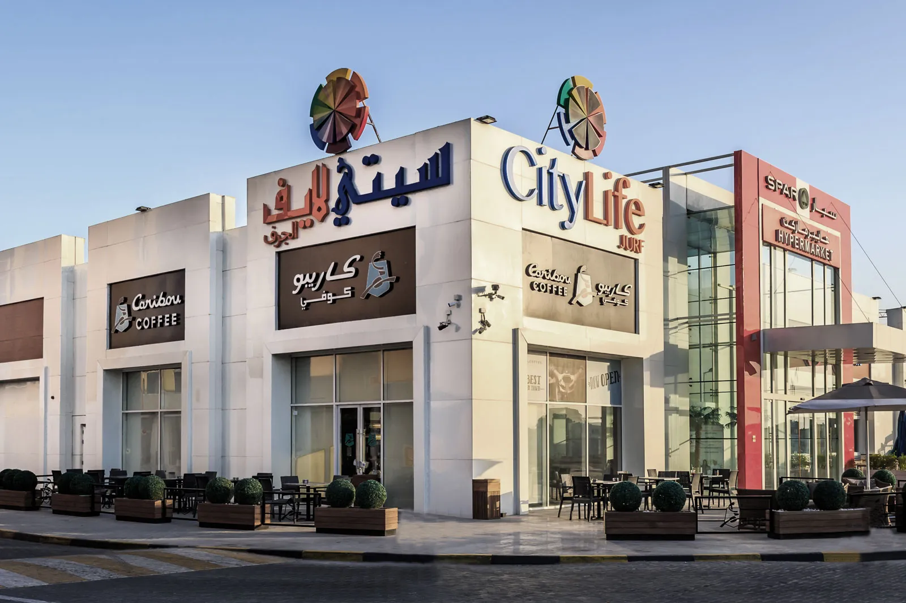
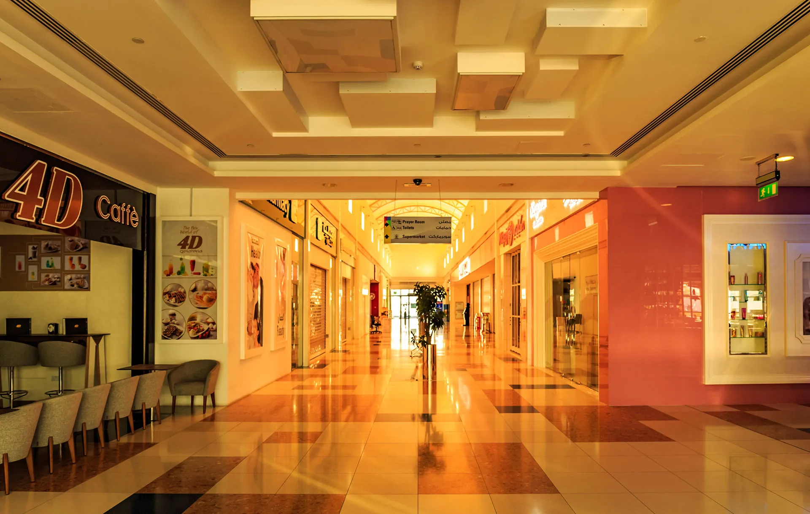
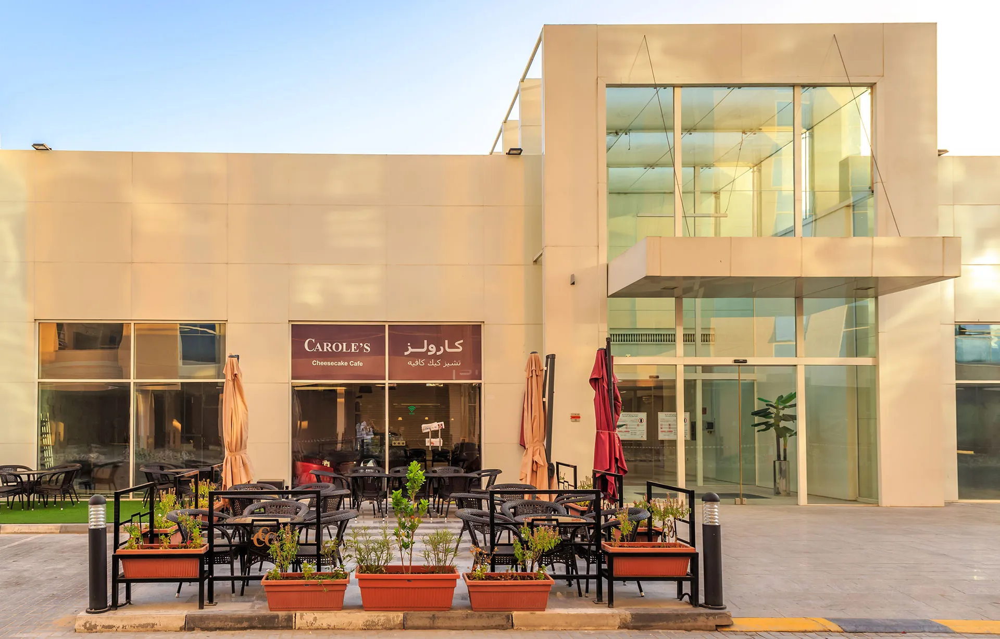

City Life Mall, Jurf
City Life Mall located in 1,2, 3 Ajman, is a community mall that primarily caters to the residents of that area.
| Client | R. select |
|---|---|
| Location | Al Jurf, Ajman |
| Completed | 2013 |
This ground structure mall is equipped with a supermarket at the center and surrounded with several retails shops that further opens out to outdoor cafes, with exterior seating facilities along the edge. The primary entrance portal is a glass cube enclosed within rectilinear frames, which leads to a linear, main circulation spine that connects the supermarket to the shops along the periphery. The overall façade is divided hierarchically into volumes that visually defines the functions. Ground parking spaces are given in the front and back of the mall which is the connected through a service road via the main road.



Also for R Select


Planning something similar? Talk to the team that delivered City Life Mall, Jurf.
Contact